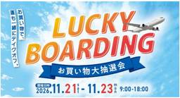
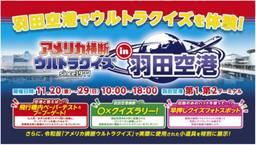
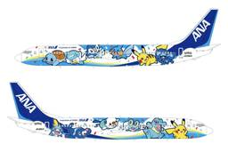
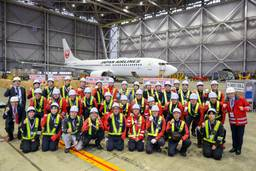
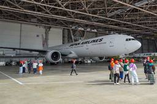
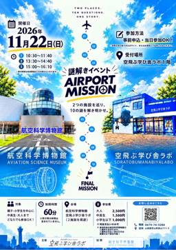
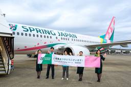
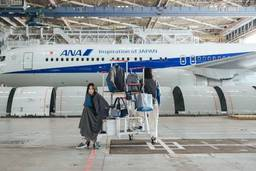
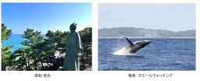

AIRLINE web -月刊エアライン×航空旅行-
https://airline.ikaros.jp
飛行機の運航を支える最前線、魅力あふれる空の旅のサービス、飛ぶためのテクノロジーやエアライン・空港の最新ビジネス動向、飛来機の撮影＆投稿など趣味として楽しむ航空の世界まで幅広く情報をお届けします。
フィード
ANA、ソムリエ・森覚氏監修のセレクトワインセット2種をA-styleにて発売
AIRLINE web -月刊エアライン×航空旅行-
ソムリエの森覚氏監修による2つのワインセットを発売。 全日空商事は、日本を代表するソムリエで、ANAの機内搭載ワインの選定にも携わる森 覚（もり さとる）氏がセレクトしたワインセットを発売した。ANA公式ECサイト「A […]The post ANA、ソムリエ・森覚氏監修のセレクトワインセット2種をA-styleにて発売 first appeared on AIRLINE web -月刊エアライン×航空旅行-.
8時間前

フォトコンの入賞作品を集めた「セントレアオリジナルカレンダー2027」、数量限定で販売開始
AIRLINE web -月刊エアライン×航空旅行-
「セントレアオリジナルカレンダー2027」 中部国際空港（セントレア）は、第1ターミナル4階セントレアオフィシャルショップSORA MONOにて、「セントレアオリジナルカレンダー2027」を数量限定（150本）で販売開 […]The post フォトコンの入賞作品を集めた「セントレアオリジナルカレンダー2027」、数量限定で販売開始 first appeared on AIRLINE web -月刊エアライン×航空旅行-.
1日前

福岡空港、「LUCKY BOARDING お買い物大抽選会」を11月21日から3日間開催
AIRLINE web -月刊エアライン×航空旅行-
「LUCKY BOARDING お買い物大抽選会」 福岡空港において、11月21日（土）から23日（月・祝）までの3日間、同空港での買い物や食事を対象とした「LUCKY BOARDINGお買い物大抽選会」を開催する。 […]The post 福岡空港、「LUCKY BOARDING お買い物大抽選会」を11月21日から3日間開催 first appeared on AIRLINE web -月刊エアライン×航空旅行-.
1日前

伝説のクイズ番組と羽田空港がコラボ。「アメリカ横断ウルトラクイズ in 羽田空港」開催
AIRLINE web -月刊エアライン×航空旅行-
「アメリカ横断ウルトラクイズ in 羽田空港」 羽田空港第1・第2ターミナルにおいて、11月20日から11月29日の期間、「アメリカ横断ウルトラクイズ in 羽田空港」を開催する。本企画は、2027年に番組誕生50周年 […]The post 伝説のクイズ番組と羽田空港がコラボ。「アメリカ横断ウルトラクイズ in 羽田空港」開催 first appeared on AIRLINE web -月刊エアライン×航空旅行-.
1日前

AIRDO、都内のロフト2店舗でオリジナルグッズを期間限定販売
AIRLINE web -月刊エアライン×航空旅行-
ロフトでの期間限定販売を開始したAIRDOオリジナルグッズ AIRDOは、10月12日（月・祝）より期間限定で、銀座ロフトと渋谷ロフトにてAIRDOオリジナルグッズの販売を開始している。販売は11月30日（月）まで。 […]The post AIRDO、都内のロフト2店舗でオリジナルグッズを期間限定販売 first appeared on AIRLINE web -月刊エアライン×航空旅行-.
1日前

ANA、特別塗装機「ポケモンジェット 青」就航を12月12日に決定、能登“ポケモン”空港へ
AIRLINE web -月刊エアライン×航空旅行-
ANAは11月20日、ポケモン30周年特別企画の第3弾となる特別塗装機「ポケモンジェット 青」を12月12日に国内線定期便へ就航させると発表した。シリーズ最後を飾る同機の機材はボーイング737-800（登録記号：JA5 […]The post ANA、特別塗装機「ポケモンジェット 青」就航を12月12日に決定、能登“ポケモン”空港へ first appeared on AIRLINE web -月刊エアライン×航空旅行-.
1日前

貨物ハンドリングと安全品質の理解を深める、JAL CARGO グランドチャンピオンシップ 2026を開催
AIRLINE web -月刊エアライン×航空旅行-
「JAL CARGO グランドチャンピオンシップ 2026（Grand Championship -2026-）」を実施。 JALは11月17日、「JAL CARGO グランドチャンピオンシップ 2026（Grand […]The post 貨物ハンドリングと安全品質の理解を深める、JAL CARGO グランドチャンピオンシップ 2026を開催 first appeared on AIRLINE web -月刊エアライン×航空旅行-.
3日前
セントレア、空港事業者18社が集まる合同企業説明会を12月19日に開催
AIRLINE web -月刊エアライン×航空旅行-
セントレア空港事業者合同企業説明会。 中部国際空港は、12月19日に、中部国際空港セントレア第1ターミナル1階のセンターピアガーデンで「セントレア空港事業者合同企業説明会」を開催する。今回で6回目を迎える説明会には、空 […]The post セントレア、空港事業者18社が集まる合同企業説明会を12月19日に開催 first appeared on AIRLINE web -月刊エアライン×航空旅行-.
3日前

ホテルメトロポリタン羽田、JAL SKY MUSEUM見学付き宿泊プランを販売
AIRLINE web -月刊エアライン×航空旅行-
JAL SKY MUSEUMの見学体験（イメージ）。 ホテルメトロポリタン羽田は、2027年1月19日の宿泊と、翌20日の「JAL SKY MUSEUM」見学をセットにした体験型プランの販売を開始した。今回で通算4回目 […]The post ホテルメトロポリタン羽田、JAL SKY MUSEUM見学付き宿泊プランを販売 first appeared on AIRLINE web -月刊エアライン×航空旅行-.
3日前
キャセイグループ、A330neoとA321neoを追加導入。ブラックフライデーセールも実施
AIRLINE web -月刊エアライン×航空旅行-
キャセイグループ、新たにA330-900 11機とA321neo 3機を導入。 キャセイグループは、リージョナル路線用のワイドボディ機およびナローボディ機を新たに14機追加発注した。今回導入するのはA330-900 1 […]The post キャセイグループ、A330neoとA321neoを追加導入。ブラックフライデーセールも実施 first appeared on AIRLINE web -月刊エアライン×航空旅行-.
3日前

航空科学博物館と空飛ぶ学び舎ラボ、11月22日に謎解きイベント「AIRPORT MISSION」開催
AIRLINE web -月刊エアライン×航空旅行-
AIRPORT MISSION 空飛ぶ学び舎ラボは、航空科学博物館の協力のもと、11月22日に謎解きイベント「AIRPORT MISSION」を開催する。同イベントは、空港で巻き起こる不可解な消滅現象をテーマに、2施設 […]The post 航空科学博物館と空飛ぶ学び舎ラボ、11月22日に謎解きイベント「AIRPORT MISSION」開催 first appeared on AIRLINE web -月刊エアライン×航空旅行-.
3日前

スプリング・ジャパン新塗装初号機「JA05GR」、成田＝函館線で国内線初就航。浅見社長らが横断幕でお見送り
AIRLINE web -月刊エアライン×航空旅行-
スプリング・ジャパンの新塗装機が国内線初就航。 スプリング・ジャパンは11月17日、ブランドリニューアルに伴う新塗装初号機（ボーイング737-800、登録記号：JA05GR）による国内線初便として、成田発函館行きIJ8 […]The post スプリング・ジャパン新塗装初号機「JA05GR」、成田＝函館線で国内線初就航。浅見社長らが横断幕でお見送り first appeared on AIRLINE web -月刊エアライン×航空旅行-.
4日前

関西国際空港、インバウンド旅客数が累計2億人を突破
AIRLINE web -月刊エアライン×航空旅行-
セレモニーの様子。 関西エアポートは、関西国際空港における開港以来のインバウンド（訪日外国人）旅客数が、累計2億人に達したことを記念して、2億人記念セレモニーを実施した。 セレモニーでは、関西エアポート 専務執行役員 […]The post 関西国際空港、インバウンド旅客数が累計2億人を突破 first appeared on AIRLINE web -月刊エアライン×航空旅行-.
4日前

京急に「ANAのふるさと納税トレイン」が登場。鉄道・空港・機内をつないで地域の物語を発信
AIRLINE web -月刊エアライン×航空旅行-
京急でラッピング車両「ANAのふるさと納税トレイン」の運行がスタート。 ANAあきんどは、2026年度下期における「ANAのふるさと納税」の大規模プロモーションを11月16日より始動した。「ふるさと納税に、物語をもっと […]The post 京急に「ANAのふるさと納税トレイン」が登場。鉄道・空港・機内をつないで地域の物語を発信 first appeared on AIRLINE web -月刊エアライン×航空旅行-.
5日前

ANA、客席シートカバーの生地を使用した限定コレクション発売。整備部門の新規事業「2ND RUNWAY」
AIRLINE web -月刊エアライン×航空旅行-
ANAは、整備部門が、航空機に関連する素材などを活用し、ファッションやインテリア商品として新たな価値を生み出すプロジェクト「2ND RUNWAY（セカンドランウェイ）PROJECT」を始動すると発表した。 「2ND […]The post ANA、客席シートカバーの生地を使用した限定コレクション発売。整備部門の新規事業「2ND RUNWAY」 first appeared on AIRLINE web -月刊エアライン×航空旅行-.
5日前

JAL、福岡=高知線、奄美大島線を期間限定で増便
AIRLINE web -月刊エアライン×航空旅行-
JALグループは、2027年2月21日から3月27日まで、福岡=高知線と福岡=奄美大島線を期間限定で増便する。両路線ともに1日1往復ずつ増便し、高知線は1日3往復、奄美大島線は1日2往復運航する。 今回の増便は、春の […]The post JAL、福岡=高知線、奄美大島線を期間限定で増便 first appeared on AIRLINE web -月刊エアライン×航空旅行-.
5日前
ANAグループによる国内独占販売から20年――エクアドル「田辺農園」バナナの開拓史
AIRLINE web -月刊エアライン×航空旅行-
左から田辺農園の農園副総支配人 田邊洋樹氏、農園主 田邊正裕氏、ANAフーズ 生鮮食品事業本部 輸入開発部 輸入開発チームの仲松佑梨氏。 ANAグループにおいて食品の輸入・販売などを担うANAフーズは、複数のバナナのブ […]The post ANAグループによる国内独占販売から20年――エクアドル「田辺農園」バナナの開拓史 first appeared on AIRLINE web -月刊エアライン×航空旅行-.
5日前
ANA、「GREEN×EXPO 2027」に協賛。特別デカール機や機内コラボアイテム展開
AIRLINE web -月刊エアライン×航空旅行-
ANA×「GREEN EXPO 2027」 ANAホールディングスは、2027年3月19日より神奈川県横浜市で開催される「GREEN×EXPO 2027」のゴールドパートナーとして「機運醸成プロジェクト」に協賛する。 […]The post ANA、「GREEN×EXPO 2027」に協賛。特別デカール機や機内コラボアイテム展開 first appeared on AIRLINE web -月刊エアライン×航空旅行-.
7日前

AIRDO、「白い恋人」誕生50周年を記念した機内コラボ企画
AIRLINE web -月刊エアライン×航空旅行-
白い恋人×AIRDO 機内コラボレーション企画。 機内サンプリング。 石屋製菓とAIRDOは、北海道土産の定番「白い恋人」が今年で誕生50周年を迎えることを記念したコラボレーション企画を2026年12月～2027年8月 […]The post AIRDO、「白い恋人」誕生50周年を記念した機内コラボ企画 first appeared on AIRLINE web -月刊エアライン×航空旅行-.
8日前
羽田空港に「くまのプーさん」デビュー100周年を祝う特別なクリスマスツリーが登場！
AIRLINE web -月刊エアライン×航空旅行-
日本空港ビルディングは、羽田空港ではクリスマスシーズンを彩る特別な装飾を施すことを発表した。第1・第2ターミナルで、それぞれ異なるテーマの豪華なクリスマスツリーが登場する。 第1ターミナル2階のマーケットプレイスでは […]The post 羽田空港に「くまのプーさん」デビュー100周年を祝う特別なクリスマスツリーが登場！ first appeared on AIRLINE web -月刊エアライン×航空旅行-.
8日前
ZIPAIR、2027年3月2日より成田＝トロント線就航。本邦エアライン初
AIRLINE web -月刊エアライン×航空旅行-
ZIPAIR、成田＝トロント線就航。 ZIPAIRは、2027年3月2日より成田＝トロント線を就航すると発表した。11月12日より、2027年10月30日搭乗分までの航空券の販売を開始している。トロント線は同社の11路 […]The post ZIPAIR、2027年3月2日より成田＝トロント線就航。本邦エアライン初 first appeared on AIRLINE web -月刊エアライン×航空旅行-.
8日前
週2便の経由便から始まり、毎日2便の直行便へ。JAL、東京＝ニューヨーク線が就航60周年
AIRLINE web -月刊エアライン×航空旅行-
JALの東京＝ニューヨーク線が就航60周年。 JALの東京＝ニューヨーク線が11月12日、定期運航開始から60周年を迎えた。 JALのニューヨーク線は、1964年4月2日にニューヨーク世界博覧会の従業員輸送特別飛行で […]The post 週2便の経由便から始まり、毎日2便の直行便へ。JAL、東京＝ニューヨーク線が就航60周年 first appeared on AIRLINE web -月刊エアライン×航空旅行-.
9日前
スプリング・ジャパン、「桜舞う」新塗装機を成田格納庫でお披露目 11月17日就航へ
AIRLINE web -月刊エアライン×航空旅行-
成田空港のJAL格納庫内で公開されたスプリング・ジャパン新塗装をまとったボーイング737-800（JA05GR）。 中国・広州で塗装変更、11月10日に成田へ帰着 スプリング・ジャパンは11月11日、成田空港で新塗装初 […]The post スプリング・ジャパン、「桜舞う」新塗装機を成田格納庫でお披露目 11月17日就航へ first appeared on AIRLINE web -月刊エアライン×航空旅行-.
10日前
JALUX、JALファーストクラスラウンジの「塩バニラアイス」を一般販売
AIRLINE web -月刊エアライン×航空旅行-
塩バニラアイス（8個入り）、5,940円。 JALUXは11月2日、JALオリジナルグルメブランド「JAL SELECTION」の新商品として、「塩バニラアイス（8個入り）」をJAL公式ショッピングサイト「JALショッ […]The post JALUX、JALファーストクラスラウンジの「塩バニラアイス」を一般販売 first appeared on AIRLINE web -月刊エアライン×航空旅行-.
10日前
ANA X、マイルが貯まる海外通信サービス「ANA グローバル eSIM」スタート
AIRLINE web -月刊エアライン×航空旅行-
ANA グローバル eSIM。 ANA Xは、ビジョンと連携し、11月10日より、マイルが貯まる海外通信サービス「ANA グローバル eSIM」の提供を開始した。 本サービスは、海外旅行や海外出張時に、自身のスマート […]The post ANA X、マイルが貯まる海外通信サービス「ANA グローバル eSIM」スタート first appeared on AIRLINE web -月刊エアライン×航空旅行-.
10日前
Skyart JAPAN、航空グッズやシミュレーター体験を年末年始に特価販売
AIRLINE web -月刊エアライン×航空旅行-
デルタ航空 B767 ファーストクラスシート Skyart JAPANオリジナルモデル。 航空機関連商品の販売を行うSkyart JAPANは、年末年始の特別企画として「なんでもセール」をテーマに、航空関連商品の幅広い […]The post Skyart JAPAN、航空グッズやシミュレーター体験を年末年始に特価販売 first appeared on AIRLINE web -月刊エアライン×航空旅行-.
11日前
JALカード、会員限定の訓練施設体験＆格納庫見学イベント
AIRLINE web -月刊エアライン×航空旅行-
JALカード会員限定イベント JAL訓練施設体験＋JAL工場見学～SKY MUSEUM～ JALは12月12日、日本航空第一テクニカルセンターで、18歳以上のJALカード会員を対象とした体験イベントを実施する。イベント […]The post JALカード、会員限定の訓練施設体験＆格納庫見学イベント first appeared on AIRLINE web -月刊エアライン×航空旅行-.
11日前
ANAとベトナム航空、提携10周年で共同事業に向けた基本合意書を締結
AIRLINE web -月刊エアライン×航空旅行-
ANAホールディングス（ANAHD）とベトナム航空は11月9日、戦略的業務・資本提携10周年および共同事業（ジョイントベンチャー：JV）開始に向けた基本合意書の締結式典を開催した。ベトナム共産党中央執行委員会書記長兼国 […]The post ANAとベトナム航空、提携10周年で共同事業に向けた基本合意書を締結 first appeared on AIRLINE web -月刊エアライン×航空旅行-.
12日前
羽田空港 第2ターミナルに「ボディケア＆ヘッドスパLUCK WELLNESS」
AIRLINE web -月刊エアライン×航空旅行-
ボディケア＆ヘッドスパLUCK WELLNESS羽田空港第2ターミナル店 日本空港ビルデングは11月2日、羽田空港第2ターミナル3階に「ボディケア＆ヘッドスパLUCK WELLNESS羽田空港第2ターミナル店」をオープ […]The post 羽田空港 第2ターミナルに「ボディケア＆ヘッドスパLUCK WELLNESS」 first appeared on AIRLINE web -月刊エアライン×航空旅行-.
12日前
デルタ航空、羽田=ロサンゼルス線で「デルタ・ワン」のサービスを刷新
AIRLINE web -月刊エアライン×航空旅行-
デルタ航空は、最上位クラス「デルタ・ワン」のサービスを全面的リニューアルし、2026年11月3日からロサンゼルス国際空港（LAX）発の太平洋横断路線で先行導入すると発表した。新サービスは羽田＝ロサンゼルス線でも展開され […]The post デルタ航空、羽田=ロサンゼルス線で「デルタ・ワン」のサービスを刷新 first appeared on AIRLINE web -月刊エアライン×航空旅行-.
12日前
JALとスカパーJSATが業務提携、衛星データでヒグマの出没リスクを可視化へ
AIRLINE web -月刊エアライン×航空旅行-
JALとスカパーJSATは、衛星データを活用した地域課題の解決と新規事業の創出に向け、業務提携基本契約を締結した。両社の技術や知見を組み合わせ、ヒグマなどの野生鳥獣の出没リスクを可視化するソリューションの開発を検討する […]The post JALとスカパーJSATが業務提携、衛星データでヒグマの出没リスクを可視化へ first appeared on AIRLINE web -月刊エアライン×航空旅行-.
12日前
圏央道 大栄JCT～多古IC開通。熊谷知事「成田空港周辺に産業の立地を」
AIRLINE web -月刊エアライン×航空旅行-
圏央道の大栄JCT～多古IC間が開通。 国土交通省 関東地方整備局とNEXCO東日本（東日本高速道路）は11月7日15時、首都圏中央連絡自動車道（圏央道）の大栄JCT（千葉県成田市吉岡）から多古IC（千葉県香取郡多古町 […]The post 圏央道 大栄JCT～多古IC開通。熊谷知事「成田空港周辺に産業の立地を」 first appeared on AIRLINE web -月刊エアライン×航空旅行-.
14日前